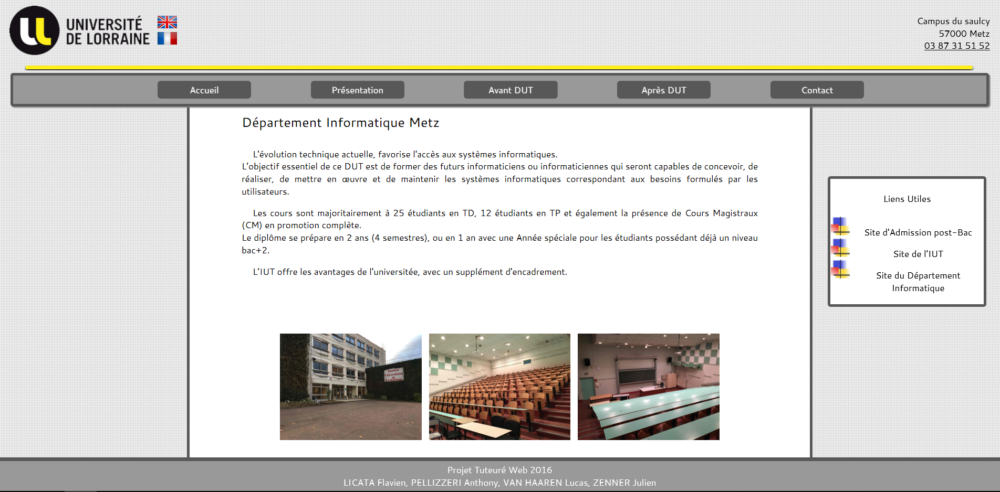
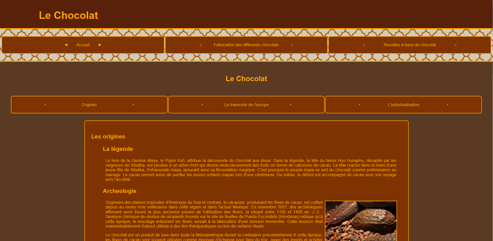
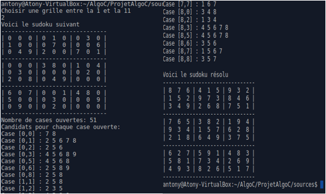
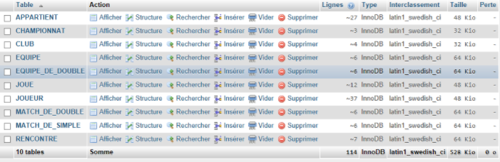
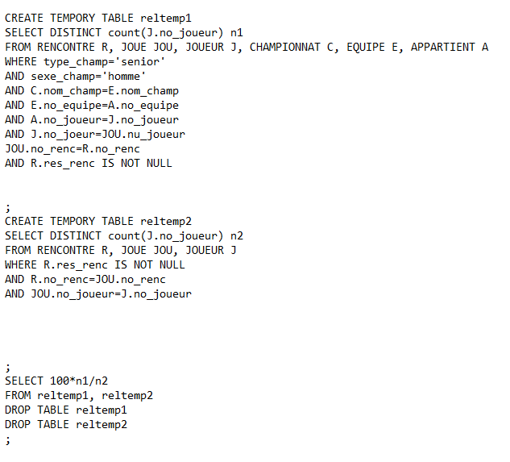
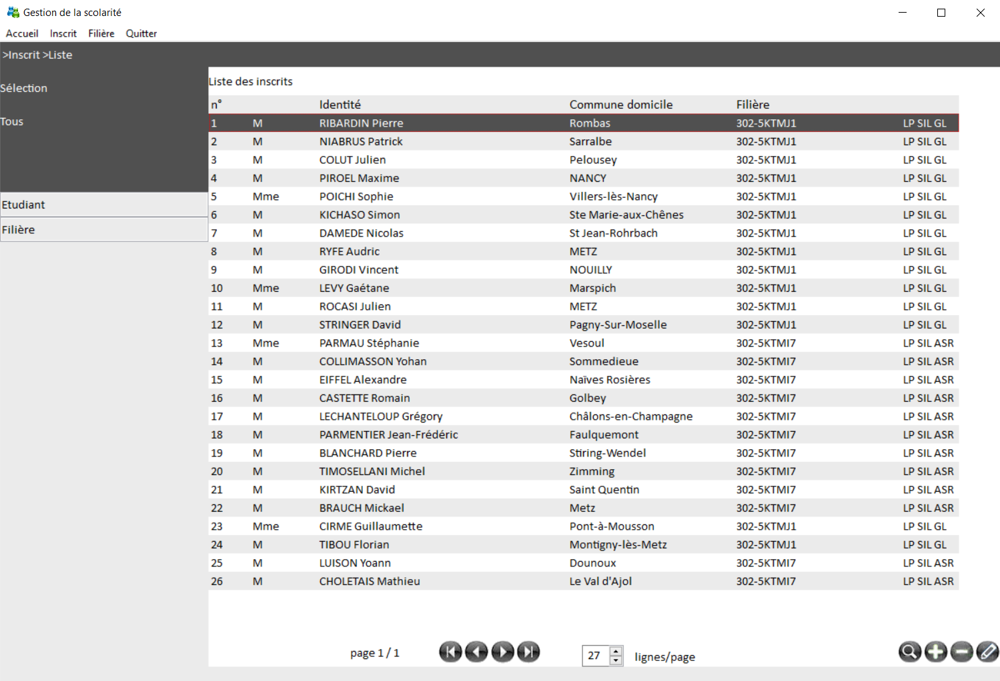
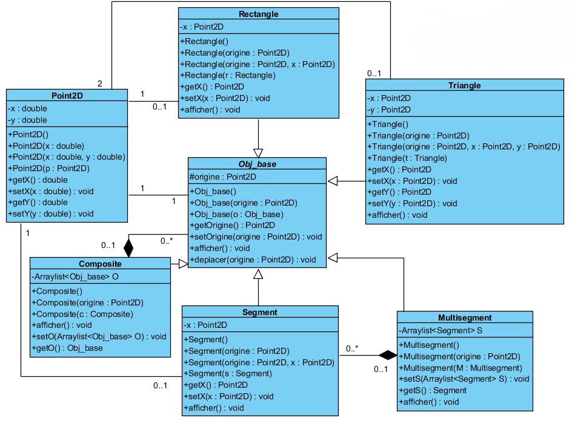
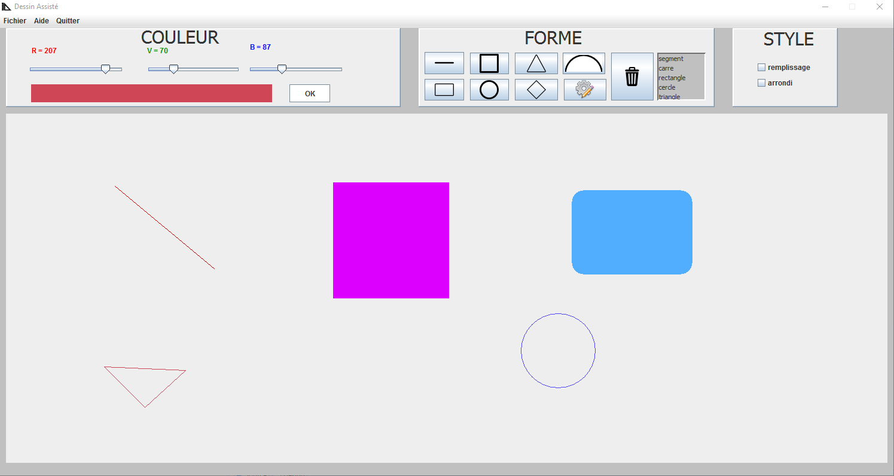
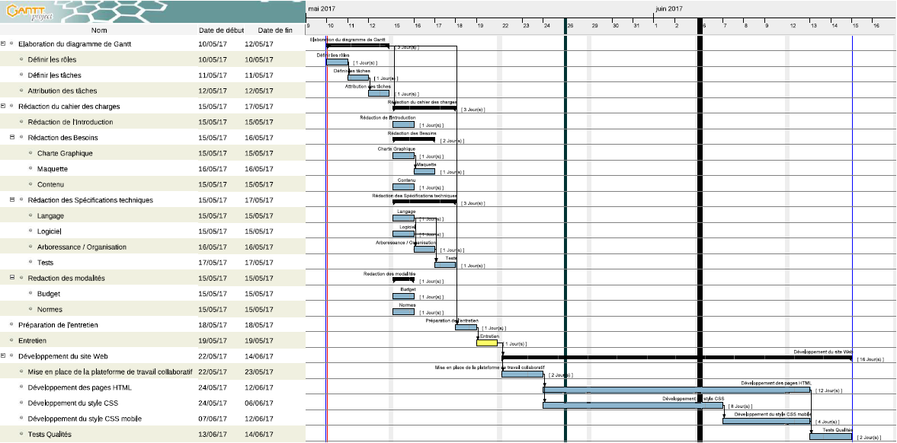

Première année
Présentation des projet de première année durant le DUT Informatique de Metz
Premier semestre
Projet tutoré 1
En premier les élèves ont dû réaliser un site internet statique. Trois thèmes différents étaient alors possible.
Compétences visées
Utilisation des langages HTML5/CSS3, travail de groupe. Elaboration d'un cahier des charges. Contrainte du temps. Partie communication.
Création d'un site web pour promouvoir le Département Informatique auprès des lycéens et lycéennes
L'idée de ce projet est de créer un site pour promouvoir le Département Informatique et le DUT Informatique auprès des lycéens et plus particulèrement auprès des lycéennes, rare dans cette filière.
Création d'un site web présentant l'univers du chocolat
L'idée de ce projet est de créer un site pour présenter l'univers du chocolat. Le but est de retracer l'histoire du chocolat, informer le lecteur sur la fabrication, la composition des chocolats.
Création d'un site web présentant l'univers des jeux-vidéo
L'idée de ce projet est de créer un site rassemblant des informations sur les jeux vidéo. Les passionnés de jeux vidéos en sont comblés ! Enrichissez vos connaissances en termes de jeux vidéos et retracer l'histoire.

Contraintes
La durée pour effectuer ce projet était d'un mois.
Langage C
Résolution de grille de Soduko par notion de candidat.
Le programme permet de résoudre les grilles de sudoku dites faciles et d'afficher leur solution. Si une grille est diffcile, le programme affiche les candidats des cases ouvertes restantes. L'affichage des solutions se fait en mode texte dans une fenêtre terminal.
Compétences visées
Utilisation du langage C. Approfondir la notion de structure, voir comment fonctionne la lecture dans un fichier .txt
Bases De Données
Une base de données est un outil permettant de stocker et de retrouver l'intégralité des données en rapport avec un thème ou une activité. des requêtes peuvent être formulées afin de selectionnées les données nécessaires à chaque demande
D'une part, réaliser une base de donnée d'un championnat de tennis (les tables étaient definies dans le sujet), d'autre part trouver les requêtes correspondants aux demandes afin de s'initier à ce language
Objectifs visées
S'initier avec le Système de Gestion de Base de Données(SGBD) mySQL. Comprendre le fonctionnement d'une BDD.Etablir un jeu cohérent.
Deuxième semestre
Au second semestre, les étudiants doivent réalisés cinq projets.
Bases De Données
Dans la continuité du projet fait au semestre 1, écrire des requêtes afin de répondre au mieux a la demande des clients
Objectifs visées
Approfondir ses connaissances dans la gestion d'une base de donnée
Assembleur
Réaliser un jeu en utilisant le langage MASM32
Définition
Un langage d'assemblage ou langage assembleur est un langage de bas niveau(le codage se rapproche du langage machine ex:01)
Objectifs visés
S'initier au langage MASM32 qui est un langage d'assembleur. Réussir à trouver les informations importantes dans un guide

Interface Homme Machine
Réaliser un application de gestion de la scolarité
Objectifs visés
Découvrir le langage Pascal qui est un langage de programmation impératif. Respecter un cahier des charges précis. Découvrir le logiciel de gestion de bases de données mysql workbench permettant entre autre de sauvegarder des requêtes(vue/procédure)afin des les réutiliser dans le logiciel
Conception Orientée Objet / Programmation Orienté Objet
Réaliser un logiciel de dessin
Réalisation
Ce projet sera l'objet de deux parties, l'une concernera la partie COO et l'autre POO
COO
Réaliser une modélisation UML de l'ensemble de l'application simplifiée de dessin assisté, en donnant les diagrammes de classes, d'objets et de séquences correspondants
POO
Porgrammer l'ensemble du projet dans le langage Java qui est un langage de programmation informatique orienté objet
Compétences visés
Comprendre l'importance des diagrammes de classes, d'objets et de séquences ainsi que découvrir le langage de programmation JAVA
Projet Tutoré
Mettre en œuvre des méthodes de conduite de projet, tel que décrit dans le module M2107 du PPN 2013.
Objectifs visés
L'objectif principal de ce projet est de développer un site web destiné à présenter les projets réalisés par les étudiants de la formation (1ère Année, 2ème Année, Année Spéciale de DUT Informatique à Metz).
Ce projet va permettre aux étudiants de découvrir de nouveaux logiciels de gestions ainsi que la répartition des taches et bien d'autre compétances qu'ils vont devoir acquerirs afin de réaliser aux mieux le site final
